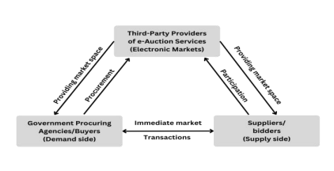
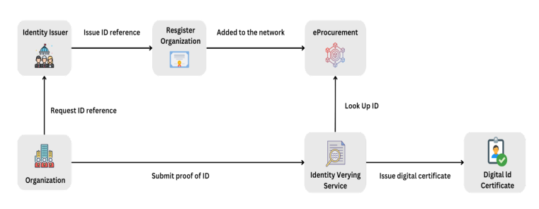
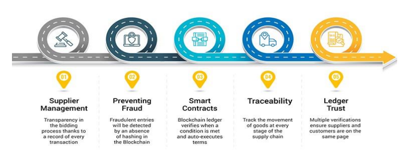
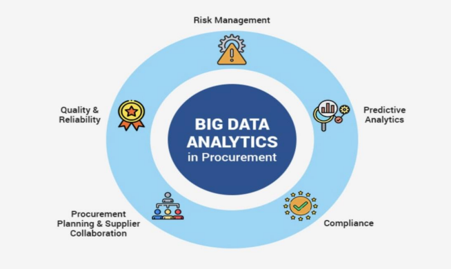
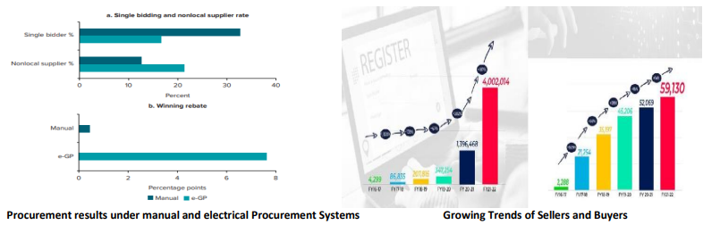

<!DOCTYPE html>
<html class="no-js" lang="en">

<head>
    <meta charset="utf-8" />
    <title>Public Procurement| Blog | PPGS</title>
    <meta name="description" content="Explore insightful articles on the Uniform Civil Code, covering topics related to legal perspectives, societal impact, and the ongoing discourse. Stay informed and engaged with our blog on the Uniform Civil Code." />
    <meta name="author" content="UCC, BLOG, IIT, KHARAGPUR, Kgp" />

    <meta name="viewport" content="width=device-width, initial-scale=1" />

    <link rel="stylesheet" href="blog1.css" />
    <link rel="stylesheet" href="blog.imgText.css">
    <link rel="stylesheet" href="https://cdnjs.cloudflare.com/ajax/libs/font-awesome/6.2.0/css/all.min.css"
        integrity="sha512-xh6O/CkQoPOWDdYTDqeRdPCVd1SpvCA9XXcUnZS2FmJNp1coAFzvtCN9BmamE+4aHK8yyUHUSCcJHgXloTyT2A=="
        crossorigin="anonymous" referrerPolicy="no-referrer" />

    <!-- <script src="../js/modernizr.js%2bpace.min.js.pagespeed.jc.OkXcmMKfmj.js"></script> -->
    <!-- <script>
        eval(mod_pagespeed_0fd9azBvCP);
    </script>
    <script>
        eval(mod_pagespeed_JR7XQi9G3W);
    </script> -->
    <link rel="apple-touch-icon" sizes="180x180" href="../logo.png">
    <link rel="icon" type="image/png" sizes="32x32" href="../logo.png">
    <link rel="icon" type="image/png" sizes="16x16" href="../logo.png">
    <link rel="shortcut icon" href="../logo.png" type="image/x-icon" />
    <link rel="icon" href="../logo.png" type="image/x-icon" />
    <script nonce="02f433e8-fab8-45d5-ad82-41726ecf65aa">


        (function (w, d) {
            ! function (a, e, t, r) {
                a.zarazData = a.zarazData || {};
                a.zarazData.executed = [];
                a.zaraz = {
                    deferred: []
                };
                a.zaraz.q = [];
                a.zaraz._f = function (e) {
                    return function () {
                        var t = Array.prototype.slice.call(arguments);
                        a.zaraz.q.push({
                            m: e,
                            a: t
                        });
                    };
                };
                for (const e of ["track", "set", "ecommerce", "debug"])
                    a.zaraz[e] = a.zaraz._f(e);
                a.zaraz.init = () => {
                    var t = e.getElementsByTagName(r)[0],
                        z = e.createElement(r),
                        n = e.getElementsByTagName("title")[0];
                    n && (a.zarazData.t = e.getElementsByTagName("title")[0].text);
                    a.zarazData.x = Math.random();
                    a.zarazData.w = a.screen.width;
                    a.zarazData.h = a.screen.height;
                    a.zarazData.j = a.innerHeight;
                    a.zarazData.e = a.innerWidth;
                    a.zarazData.l = a.location.href;
                    a.zarazData.r = e.referrer;
                    a.zarazData.k = a.screen.colorDepth;
                    a.zarazData.n = e.characterSet;
                    a.zarazData.o = new Date().getTimezoneOffset();
                    a.zarazData.q = [];
                    for (; a.zaraz.q.length;) {
                        const e = a.zaraz.q.shift();
                        a.zarazData.q.push(e);
                    }
                    z.defer = !0;
                    for (const e of [localStorage, sessionStorage])
                        Object.keys(e || {})
                            .filter((a) => a.startsWith("_zaraz_"))
                            .forEach((t) => {
                                try {
                                    a.zarazData["z_" + t.slice(7)] = JSON.parse(e.getItem(t));
                                } catch {
                                    a.zarazData["z_" + t.slice(7)] = e.getItem(t);
                                }
                            });
                    z.referrerPolicy = "origin";
                //      z.src =
                //          "../../cdn-cgi/zaraz/sd0d9.js?z=" +
                //          btoa(encodeURIComponent(JSON.stringify(a.zarazData)));
                //  t.parentNode.insertBefore(z, t);
                 };
                ["complete", "interactive"].includes(e.readyState) ?
                    zaraz.init() :
                a.addEventListener("DOMContentLoaded", zaraz.init);
            }(w, d, 0, "script");
        })(window, document);
    </script>
    <!-- dropdown css -->
    <style>
        @import url('https://fonts.googleapis.com/css?family=Muli&display=swap');

        * {
            box-sizing: border-box;
        }

        .faqs-container {
            margin: 0 auto;
            max-width: 600px;
        }

        .faq {
            background-color: transparent;
            border: 1px solid #9FA4A8;
            border-radius: 10px;
            padding: 30px;
            position: relative;
            overflow: hidden;
            margin: 20px 0;
            transition: 0.3s ease;
        }

        .faq .active {
            background-color: #fff;
            box-shadow: 0 3px 6px rgba(0, 0, 0, 0.1), 0 3px 6px rgba(0, 0, 0, 0.1);
        }

        .faq.active::after,
        .faq.active::before {
            color: #2ecc71;
            content: '\f075';
            font-family: 'Font Awesome 5 Free';
            font-size: 7rem;
            position: absolute;
            opacity: 0.2;
            top: 20px;
            left: 20px;
            z-index: 0;
        }

        .faq.active::before {
            color: #3498db;
            top: -10px;
            left: -30px;
            transform: rotateY(180deg);
        }

        .faq-title {
            margin: 0 35px 0 0;
        }

        .faq-text {
            display: none;
            margin: 30px 0 0;
        }

        .faq.active {
            display: block;
        }

        .faq-toggle {
            background-color: transparent;
            border: none;
            border-radius: 50%;
            color: #fff;
            cursor: pointer;
            display: flex;
            align-items: center;
            justify-content: center;
            font-size: 16px;
            padding: 0;
            position: absolute;
            top: 30px;
            right: 30px;
            height: 30px;
            width: 30px;
        }

        .faq-toggle:focus {
            outline: none;
        }

        .faq .active .faq-toggle {
            background-color: #9FA4A8;
        }

        .faq-toggle .fa-times {
            display: none;
        }

        .faq .active .faq-toggle .fa-times {
            display: block;
        }

        .faq-toggle .fa-chevron-down {
            color: #83888E;
        }

        .faq .active .faq-toggle .fa-chevron-down {
            display: none;
        }
        a{
            color: rgb(53, 52, 51);
        }
        img{
            height: 250px;
            width: 250px;
        }
        h2{
            font-size: 20px;
        }
    </style>
    <!-- <script>
        // const toggles = document.querySelectorAll('.faq-toggle');

        // toggles.forEach(toggle => {
        //     toggle.addEventListener('click', () => {
        //         toggle.parentNode.classList.toggle('active');
        //     });
        // });
        let fachevrondown = document.getElementsByClassName("fa-chevron-down");
        let fatimes = document.getElementsByClassName("fa-times");
        let faqtext = document.getElementsByClassName("faq-text");
        let faqtoggle = document.getElementsByClassName("faq-toggle");
        faqtoggle.addEventListener('click', () => {
            console.log('clicked');
            faqtext.style.display = 'block';
            fatimes.style.display = 'block';
            fachevrondown.style.display = 'none';

        });
        fatimes.addEventListener('click', () => {
            faqtext.style.display = 'none';
            fatimes.style.display = 'none';
            fachevrondown.style.display = 'block';
        });

        // SOCIAL PANEL JS
        const floating_btn = document.querySelector('.floating-btn');
        const close_btn = document.querySelector('.close-btn');
        const social_panel_container = document.querySelector('.social-panel-container');

        floating_btn.addEventListener('click', () => {
            social_panel_container.classList.toggle('visible')
        });

        close_btn.addEventListener('click', () => {
            social_panel_container.classList.remove('visible')
        });
    </script> -->

</head>
<!--Start of the page-->

<body id="top">
    <div id="preloader">
        <div id="loader"></div>
    </div>
    <!--#01 Navbar-->
    <header class="s-header">
        <div class="header-logo">
            <a class="site-logo" href="../index.html">
                
            </a>
        </div>
        <nav class="row header-nav-wrap wide">
            <ul class="header-main-nav">
                <li><a href="../index.html" title="intro">Home</a></li>
                <li class="current"><a href="../article.html" title="blog" style="color: rgb(251, 250, 248);">Articles</a></li>
            </ul>
            <ul class="header-social">
                <li> <a href="https://www.facebook.com/ppgs.iitkgp" target="_blank"><i
                            class="fa-brands fa-facebook" aria-hidden="true"></i></a></li>
                <li> <a href="https://www.instagram.com/ppgs.iitkgp/" target="_blank"><i
                            class="fa-brands fa-instagram" aria-hidden="true"></i></a></li>
                <li> <a href="https://www.youtube.com/@ppgs.iitkgp" target="_blank"><i
                            class="fa-brands fa-youtube" aria-hidden="true"></i></a></li>
                <li> <a href="https://www.linkedin.com/company/civil-services-club-iitkgp/" target="_blank"><i
                            class="fa-brands fa-linkedin-in" aria-hidden="true"></i></a></li>
            </ul>
        </nav>
        <a class="header-menu-toggle" href="#"><span>Menu</span></a>
    </header>
    <!--NavBar ends-->
    <!--Article Starts-->
    <article class="blog-single">
        <!--Hero Section starts-->
        <div class="page-header page-header--single"
            style="background-image: url(Images/uniform-civil-code.jpg)">
            <div class="row page-header__content">
                <div class="col-full">
                    <h3 style="color: #fff;">
                        Application of Technologies in Public Procurement: An Enabler for Good Governance
                    </h3>
                    <ul class="page-header__meta">
                        <li class="author">By: Thiruvignesh, Saksham Singh, Venkata kartheek Naik, Aman Meena, Madhusudan Majhi, Arpit Kumar, 
                            Krishna Gupta and
                            Shivam Kumar</li>
                    </ul>
                </div>
            </div>
        </div>
        <!--Hero Section Ends-->
        <div class="blog-content-wrap">
            <div class="row blog-content">
                <div class="col-full blog-content__main">
                    <blockquote>
                        <p>
                            Disclaimer: The views and the opinion expressed in this article are those of the author and
                            does not necessarily reflect the views and positions of Public Policy and Governance Society IIT Kharagpur.
                        </p>
                    </blockquote>
                  
                    <!--blockquote>
                        <p>
                            The need of the hour is to show concrete and collective resolve to ensure peace, harmony and security in the world. I am confident that next year when the G20 meets in the holy land of Buddha and Gandhi, we will all agree to convey a strong message of peace to the world.
                        </p>
                    </!--blockquote>
                    <p>Prime Minister Narendra Modi at the 2022 Bali G20 Summit in Indonesia. As India has taken the responsibility to preside over G20, let’s have a deeper look into it. 
                        <br /-->
                    <h2>Key Issues faced in Governance and Public Procurement, which are to be addressed:</h2>
                    <p>Public Procurement is a process by which government sectors obtain work, goods, and services from private 
                        organizations. It represents an important strategic instrument in government agenda and public policy. The main 
                        objective ensures that procurement and purchasing are done with effective quality of goods to promote economic 
                        efficiency. A global exercise by <strong> Bosio et al. (2022)</strong> estimates that around <strong> 12% of GDP</strong> is spent on public 
                        procurement-highlighting the need for conscientious spending by the government.
                        Several hurdles and challenges to be tackled are listed below:
                        <h2>1. Corruption</h2>According to the World Economic Forum, corruption is the <strong>second most challenging factor in doing 
                        business in India</strong>. Corruption is one of the most significant issues that remain in many public procurement 
                        processes, leading to the misallocation of resources and distorted market competition. 
                        Transparency International’s <strong>Corruption Perception Index (CPI) ranked India at 94 (out of 176 countries) in 2013</strong>, 
                        with a CPI score of 36 based on an overall potential score of 100 (100 being the least corrupt). Promoting and 
                        empowering institutions such as the <strong>Central Vigilance Commission (CVC), Enforcement Directorate (ED), and Anti Corruption Bureaus (ACBs)</strong> to actively investigate the financial aspects and scrutinize the public procurement 
                        processes. 
                        Public procurement involves a significant portion of governmental budgets, accounting for <strong>29% of general 
                        government expenditures</strong> totalling <strong>4.2 trillion EUR</strong> in countries of the Organization for Economic Cooperation and 
                        Development (OECD). India’s expenditures may be less, but the corruption, with so much money at stake, takes its 
                        place at <strong>10 to 30%</strong>.
                        Multinational companies operating in India often depend on third-party intermediaries, including agents, 
                        consultants, and distributors, to engage with government agencies and officials. Certain intermediaries specialize 
                        exclusively in government-related transactions and may concentrate on collaborating with specific government 
                        departments, customers, or officials. <strong>These longstanding relationships may foster familiarity and established 
                        patterns of interaction, creating a context where improper payments or benefits to government officials can be 
                        discreetly facilitated</strong>. This complexity adds challenge to detection efforts, making it more difficult to identify and 
                        address instances of corruption within these intricate networks.

                    </p>


                    <h2>2. Lack of Discretion</h2>
                     The Indian Government’s expenses are audited and accounted for by the <strong><i>Comptroller and 
Auditor General of India (CAG)</a></i></strong>, which looks at a plethora of aspects, including whether the tendering process was 
fair and transparent. Over the years, the CAG has picked up many challenging problems like manipulation of the 
auditor and other internal inconsistencies.
<strong>Transparency</strong> is crucial for maintaining <strong>public trust</strong> in government processes. When citizens and stakeholders are 
not informed about how public funds are being spent and how procurement decisions are made, it can erode trust 
in the government's ability to use resources wisely and fairly.
The stages of public procurement involve <strong>pre-tendering</strong> which needs <strong>assessment, planning and budgeting.</strong> Other 
types include tendering and post-award which impact invitation to tender, evaluation and contract management. 
India does not have a defined structure for pre-tender market consultations. 
Without transparency, there may be limited visibility into how procurement decisions are made. This lack of 
information can result in biased or non-competitive practices, favouring certain suppliers or individuals and 
hindering fair competition among potential vendors.<br>


                    <h2>3. Monopolistic Market</h2>
                    <p>Limited competition and a Monopolistic market result in <strong>inflated prices, reduced 
                        innovation, and compromised quality of goods and services</strong>. Many vertical and horizontal agreements that violate 
                        anti-cartel provisions are undertaken. The public procurement market is particularly interesting because 
                        monopolies and oligopolies could emerge in some sectors. The bureaucracy, the diverse legal framework, and the 
                        low expertise of public authorities raise entrance barriers to non-officials, especially <strong><i>small and medium-sized 
                        enterprises (SMEs)</a></i></strong>.
                        If the monopoly supplier faces financial instability, operational problems, or failure to deliver, it can disrupt public 
                        services, leading to <strong>dependencies that are not in the best interest of the public sector</strong>. Public agencies may have 
                        limited choices when selecting suppliers, reducing their ability to find the best-fit solutions for their specific needs. 
                        This limitation can hinder effective and customized procurement processes.
                        Monopoly has fiscal disadvantages and makes the government dependent on some big players, but also influences 
                        the general notion of other policies and can be seen as a hurdle toward good governance. Often, governmental 
                        policies may conflict with the interest of such vendors, but due to the <strong>favouritism</strong> practiced, they may be subject 
                        to work <strong>contrary to public welfare</strong>.
                        <h2>4. Inefficiency and Delays</h2> The tender process for specific sectors, such as defense and railways, could be more active 
                        and composite. This stems mainly from prior procurements challenged by <strong>lengthy, convoluted bid terms and 
                        multiple layers of protocols</strong>.
                        There are several delays in many processes, such as the extension of the <strong>bid or proposal date, delay in opening 
                        bids, and delay in starting and finishing the evaluation and approval process</strong>. Negotiations and postponement of 
                        board meetings become critical for the timely completion of processes.
                        Lengthy procurement processes and bureaucratic red tape hinder timely project implementation. Many 
                        government officials are embroiled in corruption and bribery charges that weaken them in <strong>making quick, honest 
                        decisions</strong>. Public procurement is no exception and faces many of these issues. Further, the acquisition becomes 
                        complex and is delayed as faith and integrity are lost.
                        <br>
                    </p>
                    
                    <h2>5. Legal and Regulatory Compliance</h2>
                    <p>At the pinnacle of the Indian legal structure overseeing public procurement stands <strong><i>Article 299 of the Constitution 
                        of India</a></i></strong>. This article mandates that every contract executed by the executive authority of the Union of India or a 
                        State Government must be on behalf of the President of India.
                        <strong><i>Prevention of Corruption Act (1988)</a></i></strong> is the primary legislation that deals with corruption in India, including bribery. 
                        Section 9 of the PCA makes it an offense for a public servant or an official of an international organization to accept 
                        or obtain any valuable thing without consideration from a person with whom they have official dealings. This 
                        provision can apply to foreign public officials interacting with Indian public servants or organizations.
                        Non-compliance with laws and regulations should be taken under <strong>investigation and strict scrutiny</strong>. Regularly 
                        updating and enforcing legal frameworks and working on the loopholes is highly missed in the system. <strong>Ensuring 
                        adherence to international standards is critical</strong>.
                        <br><br>


                    <!-- <div class="faqs-container">
                        <div class="faq active">
                            <h3 class="faq-title">
                                Mary Roy v. State of Kerala<br>
                                Supreme Court of India<br>
                                24/02/1986<br>
                            </h3>
                            <p class="faq-text">
                                Conclusion of the Case:<br>
                                The Travancore <strong>Christian Succession Act</strong> of 1916 prevented women in the
                                Syrian Christian
                                community from inheriting property. However, the case challenged this inequality and
                                ensured
                                equal inheritance rights for Syrian Christian women in India. The Act was declared
                                invalid after
                                1951 and was subsequently superseded by the <i><strong>Indian Succession Act of
                                        192</strong></i><br><br>
                            </p>
                            <button class="faq-toggle">
                                <i class="fas fa-chevron-down"></i>
                                <i class="fas fa-times"></i>
                            </button>
                        </div>
                    </div>


                    <div class="faqs-container">
                        <div class="faq active">
                            <h3 class="faq-title">
                                John Vallamattom v. Union of India<br>
                                Supreme Court of India<br>
                                21/07/2003<br>
                            </h3>
                            <p class="faq-text">
                                Conclusion of the case:<br>
                                The petitioner, a Roman Catholic Priest, and Indian citizen, filed a petition arguing
                                that the
                                Indian Succession Act of 1925 imposed limitations on passing property for religious and
                                charitable purposes. The Judge ruled that there was no valid reason to restrict
                                individuals from
                                making testamentary dispositions of personal property for charitable causes.
                                Consequently, the
                                Supreme Court declared Section 118 of the <i><strong>Indian Succession Act</strong></i>,
                                1925 unconstitutional,
                                as it
                                violated <i><strong>Article 14</strong></i> of the Indian Constitution.<br><br>
                            </p>
                            <button class="faq-toggle">
                                <i class="fas fa-chevron-down"></i>
                                <i class="fas fa-times"></i>
                            </button>
                        </div>
                    </div>

                    India, known for its cultural diversity, is also home to Jews, who adhere to the Torah as the
                    divine commandments. While there is generally harmony with Jewish personal laws, a notable case
                    occurred in the <strong>Bombay High Court</strong> in 2012. A Jewish couple, married according to
                    Jewish customs
                    in a synagogue, filed for divorce. The couple couldn't prove their case and the court didn't
                    move in their favor.<br><br> -->
                    </p>
                    <h2>Brief Description of the proposed technology intervention:</h2>
                    <p>To address these challenges pertaining to corruption, lack of transparency and inefficiency in public procurement, 
                        we propose <strong><i>Bharat e-Procurement System (BePS)</a></i></strong> a standalone platform for managing different stages of Public 
                        Procurement and a manifesto for addressing the aforesaid issues. 
                        <strong>BePS </strong>would make use of the following manoeuvres:<br>


                    <!-- <div class="faqs-container">
                        <div class="faq active">
                            <h3 class="faq-title">
                                Sastri yagnapurushadji vs Muldas brudardas vaishya<br>
                                Supreme court of India <br>
                                14-01-1966<br>
                            </h3>
                            <p class="faq-text">
                                conclusion of the case:
                                Sastri Yaganapurushadji, a follower of the Swaminarayan Sect, challenged the judgment of
                                the
                                Bombay High Court. Muldas Brudardas, the President of the Mahagujarat Dalit Association,
                                expressed his intention to visit the Swaminarayan Temple under the provisions of the
                                Bombay
                                <strong><i>Harijan Temple Entry Act</strong></i> (1947). Sastri sought an injunction to
                                prevent Harijans from
                                entering
                                the temple, raising arguments related to the Act's applicability to Satsangis and the
                                validity
                                of the respondent's vakalatnama (power of attorney). Ultimately, the High Court upheld
                                the<strong><i>
                                        constitutionality of the 1956 Act</strong></i>, affirming that followers of the
                                Swaminarayan sect
                                were
                                considered Hindus.<br><br>
                            </p>
                            <button class="faq-toggle">
                                <i class="fas fa-chevron-down"></i>
                                <i class="fas fa-times"></i>
                            </button>
                        </div>
                    </div> -->
                    </p>
                    <h2>1. e- Auctions</h2>
                    <p>The Government defines the procurement requirements, including specifications, terms, and 
                        conditions. Thereafter the procurement opportunity is announced on the <strong>e-informing platform</strong> or relevant portals. 
                        Interested bidders register on the <strong>e-ordering platform </strong>by providing necessary information and documentation 
                        which is then verified by the procuring entity. Bidders submit their electronic bids through the platform before the 
                        specified deadline. The Bids typically include details such as price quotes, technical specifications, and any other 
                        required documentation (e-informing). A <strong>pre-bid meeting </strong>may be conducted to clarify any questions or concerns 
                        raised by the bidders. The<strong> e-auction platform</strong> facilitates the real-time bidding process where the bidders can view 
                        current bid prices and adjust their own bids accordingly. After the bidding period ends, the procuring entity 
                        evaluates the bids based on predefined criteria, which may include price, technical specifications, and other 
                        relevant factors. The contract is awarded to the successful bidder with the most favourable bid, meeting all 
                        specified requirements.
                        <div class="image" style="justify-content: center; display: flex;"></div>
                    <div class="image" style="justify-content: center; display: flex;"></div>
                        <strong>Digital Identity Verification</strong> with the means of secure tokens and biometrics authenticates the identity of 
                        individuals or entities participating in the procurement process which improves reliability and curbs down the risk 
                        of knavery in the procurement process. It ensures that only sanctioned entities participate in sensitive procurement 
                        activities thus, reinforcing the integrity of the overall process. <strong>Digital Signature Certificate (DSC)</strong>-a unique identity 
                        token for bidders and stakeholders would be required to take part in the tendering processes ensuring greater 
                        security in online transactions. Certification of <strong>credibility and suitability </strong>for the tender can also be issued to 
                        eliminate incompetent vendors from the system.
                        <div class="image" style="justify-content: center; display: flex;"></div>
                        
                        <br>
                    </p>
                    
                    
                    <h2><strong>2. Blockchain Technology</strong></h2>
                    <p>The <strong><i>World Economic Forum </a></i></strong>estimated that rationalizing data through blockchain is 
                        expected to increase trade by <strong>15%</strong>. This revolutionary technology will exponentially enhance efficiency if 
                        implemented into public procurement systems. Blockchain is a <strong>decentralized approach</strong> to tamper-resistant 
                        transaction models where each successful contract is added as a token at the end of the chain and linked to the 
                        previous token, thus creating an immutable record trail for agile verification and auditing. <strong>Smart contracts</strong> that 
                        ensure that the qualifications of bidders are checked against predefined criteria automatically, auto-trigger 
                        execution, and automation at various stages of procurement-vendor verification, documentation, and payment 
                        would not only save paperwork and time but also significantly reduce the error. The government initiatives taken 
                        up by the <strong><i>Ministry of Electronics and Information Technology (MEITY) </a></i>
                        </strong>such as <strong>National Blockchain platform and 
                        India Blockchain forum </strong>intend to raise awareness.
                        <div class="image" style="justify-content: center; display: flex;"></div>
                        <div class="image" style="justify-content: center; display: flex;"></div>
                        <strong>Data analytics </strong>in procurement aids in proactive risk management by identifying and prioritizing supply chain risks, 
                        while predictive algorithms ensure accurate demand forecasting and supplier performance evaluation. <strong>Quality and 
                        reliability</strong> are enhanced through systematic supplier performance analysis, including root cause analysis for issue 
                        resolution. Data analytics also ensures compliance by monitoring regulatory changes and maintaining transparent 
                        audit trails. Lastly, in procurement planning, analytics leverages historical data to <strong>formulate strategic plans</strong>, and in 
                        supplier collaboration, it identifies opportunities for cooperation, creating a responsive and efficient supply chain. 
                        Data analytics transforms procurement by informing decisions, mitigating risks, ensuring quality and compliance, 
                        and fostering collaboration with suppliers.
                        <br><br>
                    </p>
                    <h2><strong>3. Cloud based Procurement Solution </strong></h2>
                    <p>The rising Indian Public Cloud services market is projected to achieve a value 
                        of <strong>$17.8 billion by 2027, with a CAGR of 22.9%</strong> anticipated for the period 2022-2027 so, integrating multifaceted 
                        platforms for Government agencies for managing bids, requests for proposals and award contracts in this cloud based system. This system would therefore help to establish a centralized pedestal accommodating a much wider 
                        and larger data storage, providing <strong>real time data analysis</strong> and improved compliance.<br><br>
                    </p>
                    <h2>4. Geospatial Technology </h2>
                    <p>Using geographic-based systems like <strong>GIS and remote sensing</strong> for location-based decision making and planning. These technologies would be deployed to assess the environmental impact of public 
                        undertakings, site selection, optimization of resource allocation, and geographical implications, thereby improving 
                        project planning and feasibility analysis. The <strong>mineralogical and mining procurements</strong> can be allotted by using this 
                        technology. The <strong><i>National Geospatial Policy (NGP)</a></i></strong> aims at advancing the <strong>digital elevation model</strong>, thereby 
                        unleashing the true potential of this technology.<br>
                    </p>
                    <h2>Risks which may impact the likely outcome and how these could be mitigated: </h2>
                    
                    <h2>1. Integration and Compatibility Issues</h2>
                    <p> Getting different governmental agencies to work together can be tricky. 
                        When one agency updates its system, it might not be compatible with others, causing disruptions. Making old 
                        systems integrate well with new ones takes time, causing delays. There is a risk of errors or security issues when 
                        transferring data between governmental agencies. Integrating new agencies requires training, and the whole 
                        integration process can slow things down.
                        To handle these challenges, planning, and testing before making any integration between agencies is crucial. 
                        Using common standards helps technological systems cooperate. Using tools like<strong> APIs and adapters</strong> can facilitate 
                        smooth communication. <strong>Data cleaning</strong> is essential to prevent mistakes. Check contracts to ensure compatibility 
                        and safeguard data during integration to comply with privacy rules. Maintaining good documentation would be 
                        beneficial for future fixes. By following these steps, governments can make technology work together seamlessly, 
                        reduce problems, and optimize their processes.<br>
                    </p>
                    <h2>2. Cybersecurity Threats</h2>
                    <p>
                        E-procurement, streamlining the buying process with digital tools, carries immense benefits 
                        like transparency, efficiency, and cost savings. However, it also unleashes a digital pandora's box of cybersecurity 
                        risks that can cripple operations and haemorrhage sensitive data. Studies by Cybersecurity Ventures show a <strong>600%
                        increase in cyberattacks targeting supply chains in 2023, for example, 16 lakh cyberattacks on the G20 website per 
                        minute.</strong> Beyond data breaches, digitalization opens new avenues for fraudsters.<strong> A 2022 Forrester report </strong>reveals a 
                        <strong>32%</strong> increase in invoice fraud attempts, with manipulated bids and invoices slipping through digital cracks. This can 
                        lead to <strong>inflated costs</strong>, reputational damage, and costly legal battles.
                        To mitigate these types of attacks, we have to implement strong encryption, like <strong>AES-256</strong>, which scrambles 
                        sensitive data into an unreadable cipher, rendering it useless to even the most adept cyber-thief, limiting privileges 
                        based on user roles and needs, ensuring only authorized personnel touch critical data, precise supplier vetting, 
                        including cybersecurity audits, identifies and mitigates fraud risks before they fester.
                        
                    </p>
                    <h2>3. Steep Increase in Competition for Bidding</h2>
                    <p>
                        Public procurement faces the <strong>risk of collusion</strong>, including bid rigging 
and fraud, which can inflate prices and misuse public funds. Balancing transparency and flexibility in procurement 
processes is crucial to prevent anticompetitive practices. Mitigation measures include choosing appropriate 
<strong>bidding models, limiting joint bids, controlling sub-contracting, and imposing reserve prices</strong>.
Stricter enforcement of competition laws and educating procurement officials are essential to counter collusion 
risks. Continuous monitoring and quantitative analyses of bidding activities help detect and prevent collusion in 
sensitive sectors, optimizing tender design and resource allocation for law enforcement efforts. 
                    </p>
                    <h2>4. Vendor Lock-in</h2>
                    <p>Vendor lock-in occurs when a government utilizing e-procurement or services faces difficulty 
                        transitioning to a competitor's offering. This situation poses a significant challenge, limiting the government's 
                        options and complicating the pursuit of optimal value for its expenditures. <strong>A Gartner report</strong> from 2023 estimates 
                        that <strong>70% </strong>of organizations using proprietary e-procurement systems encounter at least one instance of vendor lockin. According to Forrester, the costs associated with data migration alone can amount to up to <strong>30%</strong> of the initial 
                        system cost for those ensnared in proprietary software. 
                        <strong>McKinsey & Company's report</strong> highlights a <strong>60% average innovation stall</strong> for companies with outdated legacy 
                        systems, impeding their access to new features and functionalities. On the contrary, entities adopting open 
                        standards in e-procurement report a <strong>25% reduction</strong> in switching costs and heightened agility to adapt to evolving 
                        market requirements.
                        </p>
                        <h2>What is track record of technology intervention proposed (in other sectors/countries): </h2>
                        <p>Public procurement represents a significant portion of government expenditure, yet processes are often still 
                            <strong>manual, inefficient, and non-transparent</strong>. To address these challenges, countries have increasingly embraced 
                            technology-driven interventions and digital solutions aimed at optimizing, streamlining, and opening up public 
                            purchasing.
                            Examining the successful implementation of extensive e-procurement systems in countries such as South Korea, 
                            Brazil, and Bangladesh is crucial. In the case of Bangladesh, the <strong>nationwide adoption of an e-Government 
                            Procurement (e-GP) system </strong>since 2011 presents a pertinent case study for India, given the comparable governance 
                            obstacles. A thorough analysis of the effects, hurdles, and key takeaways from <strong>Bangladesh's e-GP experience</strong> can 
                            provide valuable lessons to guide India's e-procurement strategy.
                            <div class="image" style="justify-content: center; display: flex;"></div>
                            
                            The <strong>US relies on competitive bidding</strong> for procurement, adopting e-procurement for convenience and cost savings 
                            despite cyber risks, while <strong>Singapore utilizes centralized regulated procurement</strong> achieving efficiency gains through 
                            mandated e-procurement but faces agency fragmentation. In the case of Bangladesh, single bidder percentages 
                            are<strong> 35 and 15% </strong>respectively.
                            <strong><i>eCertis</a></i></strong>, an online platform facilitating cross-border public procurement tenders in the <strong>European Union (EU)</strong>, 
                            recently underwent a restructuring to enhance data structure efficiency, resulting in a <strong>2.9% increase to 2,156 
                            records</strong>. The November 2022 database now features <strong>1,209 criteria</strong> for tender eligibility (6% growth from the 
                            previous year) and<strong>661 items on acceptable evidence </strong>and certificates (1.8% decrease from 2021). This expansion 
                            underscores eCertis' dedication to improving guidance despite architectural changes, reflecting a commitment to 
                            aiding contractors in navigating the intricate regulatory landscape of EU cross-border public tenders.
                            While a comprehensive national e-procurement system is still in progress, India has implemented several electronic 
                            procurement platforms at the central and state government levels to progressively digitize and streamline public 
                            purchasing. Some of the key initiatives include the <strong><i>Central Public Procurement Portal (CPPP)</a></i></strong> for central 
                            government tenders, the <strong>Government e-Marketplace (GeM)</strong> for common use goods and services, adoption of <strong>
                            Open Contracting Data Standards (OCDS) </strong>to enhance transparency, and rollout of statewide e-procurement 
                            systems by governments in <strong>Andhra Pradesh and Karnataka</strong>.
                            Some of the key systems that India could practice from best international practices are implementing nationwide 
                            e-procurement and tendering systems, develop centralized procurement databases and policies, enhance 
                            transparency through <strong>e-portals, open data and RTI,strengthen auditing, accountability and anti-corruption laws, 
                            nurture domestic supplier capabilities and SME participation</strong>.
                            </p>
                            <h2>Likely Results and developmental impacts: </h2>
                            <h2>1. Reduced Corruption and Shaping India's Global Image </h2>
                            <p>The impact of reduced corruption extends to fostering 
                                greater public trust in the government. When citizens perceive that public officials are conducting affairs with 
                                integrity, it cultivates a sense of confidence and compliance with established rules and regulations. The 
                                implementation of fair and transparent rules becomes pivotal in this context, acting as a magnet for increased 
                                competition and a wider array of vendor choices. This transforms the procurement landscape by minimizing 
                                instances of bribery, ensuring that decisions are made based on merit rather than underhanded influences. 
                                Transparency, anti-corruption laws, and ethical processes in public procurement show India's commitment to 
                                fairness and integrity in business dealings. Making anti-corruption laws sends a strong message and shows a 
                                positive impact at a global level. Investors bend more towards a fair and transparent system thus a credible public 
                                procurement system attracts international investors.</p>
                            <h2>2. Efficiency and Transparency</h2>
                            <p>Transparency provisions enable processes and decisions to be <strong>monitored and 
                                reviewed</strong>, help ensure that decision-makers can be held accountable, and help open public procurement to more 
                                competition. Transparency must pervade all steps in the procurement cycle, from the earliest decisions on needs 
                                assessments to developing procurement plans and budget allocations, bid evaluations, implementing the contracts 
                                (and any contract amendments), and auditing performance. As a core principle of high-quality public procurement, 
                                this robust transparency regime enables the public to hold politicians and public bodies accountable. These builds 
                                trust in nations' institutions. Enhanced transparency is crucial before the bidding stage to enable decision-makers 
                                and stakeholders to make <strong>informed judgments</strong> about the planned projects' cost, quality, socio-economic, and 
                                environmental impact. 
                                To avoid manipulation or obfuscation of the decision-making process. A fair and open bidding process also will help 
                                small businesses bid for and win government contracts, boosting competition in procurement and encouraging 
                                economic growth. The <strong>‘right to reason’ </strong>and the<strong> ‘right of access to information’</strong> are sometimes collectively called 
                                the<strong> ‘right to know’</strong>. Both rights enable a person affected by a tender decision to ascertain whether the decision 
                                was taken lawfully or not.</p>
                            <h2>3. Increased Competition and Innovation</h2>
                            <p>Competition is a key factor in ensuring that governments, and their 
                                citizens, receive the best value for money in their procurement process. There are at least three avenues through 
                                which competition can have desirable effects on procurement markets. First, with free entry and an absence of 
                                collusion, prices will be driven towards marginal costs. Second, suppliers will have an incentive to reduce their 
                                production and other costs over time. Third, competition serves as an important driver of innovation. Innovation friendly procurement processes can shape markets to create opportunities for new kinds of products or services 
                                and to be more accessible to new entrants. They can introduce novel approaches to user engagement and 
                                technology evaluation to enhance the innovativeness and quality of solutions as well.
                                Because procurement processes can have unintended and unwelcome consequences for the viability of suppliers 
                                and the long-term competitiveness of markets, they can play a strategic role in establishing and maintaining 
                                competitive markets over time. Also promoting competition acts as a safeguard against the emergence of 
                                monopolies and cartels that lead to inflated prices. This approach also encourages the active participation of new 
                                small businesses. This competition improves the overall quality, service delivery and efficiency of the goods and 
                                services. Furthermore, it reduces the risk of award decisions being questioned. 
                                </p>

                </div>
            </div>
        </div>
    </article>

    <!--Footer newletter-->
    <section id="contacts">
        <footer class="s-footer footer">
            <div class="row footer__bottom">
                <div class="col-five tab-full">
                    <div class="footer__logo">
                        <a href="../index.html">
                            
                        </a>
                    </div>
                    <p>
                        Location : IIT Kharagpur, West Bengal, India
                    </p>
                    <ul class="footer__social">
                        <li> <a href="https://www.facebook.com/ppgs.iitkgp" target="_blank"><i
                            class="fa-brands fa-facebook" aria-hidden="true"></i></a></li>
                <li> <a href="https://www.instagram.com/ppgs.iitkgp/" target="_blank"><i
                            class="fa-brands fa-instagram" aria-hidden="true"></i></a></li>
                <li> <a href="https://www.youtube.com/@ppgs.iitkgp" target="_blank"><i
                            class="fa-brands fa-youtube" aria-hidden="true"></i></a></li>
                <li> <a href="https://www.linkedin.com/company/civil-services-club-iitkgp/" target="_blank"><i
                            class="fa-brands fa-linkedin-in" aria-hidden="true"></i></a></li>
                    </ul>
                </div>
                <div class="col-six tab-full end">
                    <ul class="footer__site-links">
                        <li class="current" class="smoothscroll"><a href="../index.html" title="Home">Home</a></li>
                        <li class="current" class="smoothscroll"><a href="../UPSC.html" title="UPSC">UPSC</a></li>
                        <li class="current" class="smoothscroll"><a href="../Policy.html" title="Policy">Policy</a></li>
                        <li class="current" class="smoothscroll"><a href="../article.html" title="Article">Article</a></li>

                    </ul>
                    <p class="footer__contact">
                        Do you have a question? Send us a word: <br>
                        <a href="mailto:ppgs.iitkgp@gmail.com" class="footer__mail-link"><span
                                class="__cf_email__" style="color: rgb(255, 152, 1);">ppgs.iitkgp@gmail.com</span></a>
                    </p>
                </div>
            </div>
            <div class="go-top">
                <a class="smoothscroll" title="Back to Top" href="#top"></a>
            </div>
        </footer>
    </section>

    <script src="jquery-3.2.1.min.js"></script>
    <script src="plugins.js"></script>
    <script src="main.js"></script>

    <script async src="https://www.googletagmanager.com/gtag/js?id=UA-23581568-13"></script>
    <script>
        window.dataLayer = window.dataLayer || [];

        function gtag() {
            dataLayer.push(arguments);
        }
        gtag("js", new Date());

        gtag("config", "UA-23581568-13");
    </script>
    <script defer
        src="https://static.cloudflareinsights.com/beacon.min.js/v652eace1692a40cfa3763df669d7439c1639079717194"
        integrity="sha512-Gi7xpJR8tSkrpF7aordPZQlW2DLtzUlZcumS8dMQjwDHEnw9I7ZLyiOj/6tZStRBGtGgN6ceN6cMH8z7etPGlw=="
        data-cf-beacon='{"rayId":"73602870f89e33b4","token":"cd0b4b3a733644fc843ef0b185f98241","version":"2022.6.0","si":100}'
        crossorigin="anonymous"></script>
    
        <script>
            // const toggles = document.querySelectorAll('.faq-toggle');
    
            // toggles.forEach(toggle => {
            //     toggle.addEventListener('click', () => {
            //         toggle.parentNode.classList.toggle('active');
            //     });
            // });
            let fachevrondown = document.getElementsByClassName("fa-chevron-down");
            let fatimes = document.getElementsByClassName("fa-times");
            let faqtext = document.getElementsByClassName("faq-text");
            let faqtoggle = document.getElementsByClassName("faq-toggle");
            for(let i=0; i<faqtoggle.length; i++){
            faqtoggle[i].addEventListener('click', () => {
                if(faqtext[i].style.display != 'block'){
                    console.log('clicked');
                    faqtext[i].style.display = 'block';
                    fatimes[i].style.display = 'block';
                    fachevrondown[i].style.display = 'none';
                }
                else{
                    console.log('clicked');
                    faqtext[i].style.display = 'none';
                    fatimes[i].style.display = 'none';
                    fachevrondown[i].style.display = 'block';
                }
            });
            }
    
            // SOCIAL PANEL JS
            const floating_btn = document.querySelector('.floating-btn');
            const close_btn = document.querySelector('.close-btn');
            const social_panel_container = document.querySelector('.social-panel-container');
    
            // floating_btn.addEventListener('click', () => {
            //     social_panel_container.classList.toggle('visible')
            // });
    
            // close_btn.addEventListener('click', () => {
            //     social_panel_container.classList.remove('visible')
            // });
        </script>
</body>

</html>